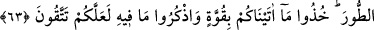

AŞAĞILIK MAYMUNLAR
62. Şüphesiz îmân edenler, yâni yahûdîlerden, hıristiyanlardan ve sâbiîlerden
Allah’a ve âhıret gününe hakkıyla inanıp sâlih amel işleyenler için Rableri katında
mükâfatlar vardır. Onlar için herhangi bir korku yoktur. Onlar üzüntü
çekmeyeceklerdir.
63. Sizden sağlam bir söz almış, Tûr dağının altında, size verdiğimizi kuvvetle
tutun, onda bulunanları daima hatırlayın, umulur ki, korunursunuz (demiştik de);
64. Ondan sonra sözünüzden dönmüştünüz. Eğer sizin üzerinizde Allah’ın ihsânı
ve rahmeti olmasaydı, muhakkak zarara uğrayanlardan olurdunuz.
65. İçinizden cumartesi günü azgınlık edip de, bu yüzden kendilerine: Aşağılık
maymunlar olun! dediklerimizi elbette bilmektesiniz.
66. Biz bunu (maymunlaşmış insanları), hadiseyi bizzat görenlere ve sonradan
gelenlere bir ibret dersi, müttakîler için de bir öğüt vesîlesi kıldık.
Âyette kâfirlerle aynı grupta sıralanışından anlaşıldığı üzere; îmân edenlerden maksad
kalbleri yalanladığı halde, dilleriyle îmân ettik, diyen münâfıklardır. Onlara münâfık
değil de îmân edenler denilmesi, zâhirî îmânın, “îmân” diye isimlendirilse bile,
sâhiblerine asla bir fayda vermeyeceğini; onları kesinlikle küfür çukurundan
kurtaramayacağını göstermek içindir.
Yahûdîliğe girenler veya Yahûdî olanlar demek olan “yehûd” kelimesi; tevbe etti
mânâsına gelen (
) fiilinden türeme Arapça bir isimdir. Buzağıya ibâdet etmekten
tevbe ettikleri ve tevbeleri korkunç bir günahtan olduğu için özellikle bu ismi
almışlardır.
Ya da “Yehûd” (
) kelimesi, Ya’kûb (a.s.)’ın büyük oğlunun ismi olan Yahûdâ’nın
Arapçalaşmış şeklidir. Yahûdîler onun ismiyle isimlendirilmişlerdir. Diğer bir görüşe